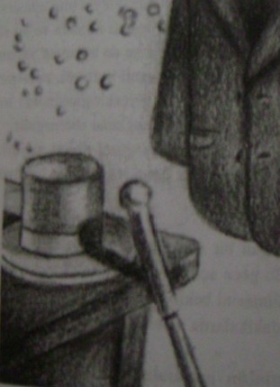

Havada dans eden kartlarla oynamak... İpekli silindir bir şapkadan çıkan tavşanlar... Bir duman bulutunun içinde kayboluveren güzel bir asistan. Sahne sihirbazlığı basit bir kandırmacanın eğlenceye dönüştüğü bir meslektir. Gösteriyi seyrettiğiniz sürece kandırıldığınızı bilirsiniz ama ne kadar düşünürseniz düşünün, ne kadar dikkatle izlerseniz izleyin tüm numaralan çözemezsiniz. Ama her nasılsa akıllıca bir numara ve bir el çabukluğu gösteriyi eğlenceli kılar ve size de arkanıza yaslanıp seyretmek kalır. Bir sihirbazın en önemli hazinesi, sahnenin hazırlanmasındaki ya da numaraların gerçekleşmesindeki basan değil, seyircinin inanmak istemesini sağlama yeteneğidir.
Aynı yeteneğe sahip olmak güzel olmaz mıydı? İşte şimdi bu büyük fırsat ayağınıza geldi. Seyirciniz bekliyor ve perde açılmak üzere!
1. Sahne alan bir sihirbazsınız ve uzun bir tura başlamak üzeresiniz. Bu gece açılış gecesi ve sahne kenarında gösterinizin anons edilmesini bekliyorsunuz.
Gösteriniz başlamadan önceki bu son dakikalarda neler hissedersiniz?
2. Gösterinizin numaralarından birinde seyircilerden birsahneye gelerek size yardımcı olacak. Size yardımcı olması için kimi çağırırdınız? (Tanıdığınız birinin ismini veriniz.)
3. Yıllar boyunca aldığınız eğitim ve edindiğiniz tecrübeye karşın numaranız gerçekleşmiyor. Size yardım etmesi için sahneye çağırdığınız kişiye ne dersiniz?
4. Gösteriden sonra soyunma odanıza geldiniz. Artık gösteri bitti, kendinizi nasıl hissediyorsunuz?
